阶级的秘密
谁干活，谁拿钱，谁定规则，谁兜底
一万多年前，你的祖先靠打猎和摘果子活着。
那时候没有富人，也没有穷人。为什么？因为食物存不下来。今天打到一头野牛，全村今晚就吃光，放三天就臭了。
没有东西可以'存起来慢慢用'，就没有人能比别人多占。大家一样饿，一样饱。
所以记住第一句话：不平等，是从'有东西可以剩下'才开始的。
后来人们学会了种小麦。粮食可以晒干、存进仓库，放一年都不坏。
这下，第一次有了'吃不完的东西'。
可是粮食多了，就得有人看守仓库、记账、决定分给谁。谁来干？祭司和士兵。他们不用种地，却决定别人能分多少。
你看，管仓库的人，慢慢就变成了'官'。权力，是从'分配剩余'里长出来的。
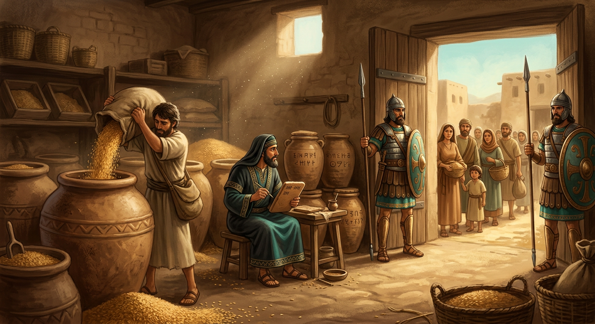
在苏美尔（今天的伊拉克），有全世界最早的学校，叫'埃杜巴'。
它教什么？教一种叫楔形文字的东西——用小木棍在泥板上刻字，记下谁交了多少粮、谁欠了多少债。
会写字的人太少了，所以他们成了最吃香的人：记账、收税、立法，全离不开他们。
从第一天起，读书识字，就是通往上层的门票。这张门票，今天还在用。
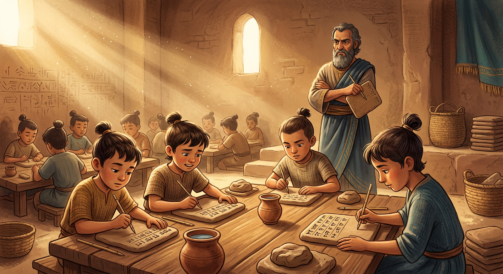
在中国，过去想当官，靠的是出身——爸爸是贵族，你才是。
公元605年，隋炀帝搞了个新发明：科举。不管你是放牛娃还是富家子，只要考试考得好，就能做官。
这是人类历史上第一次，普通人有了一条凭本事往上爬的正规通道。
从那以后，'读书改变命运'刻进了中国人的骨头里。你现在每天坐的课桌，就是那条通道的延续。
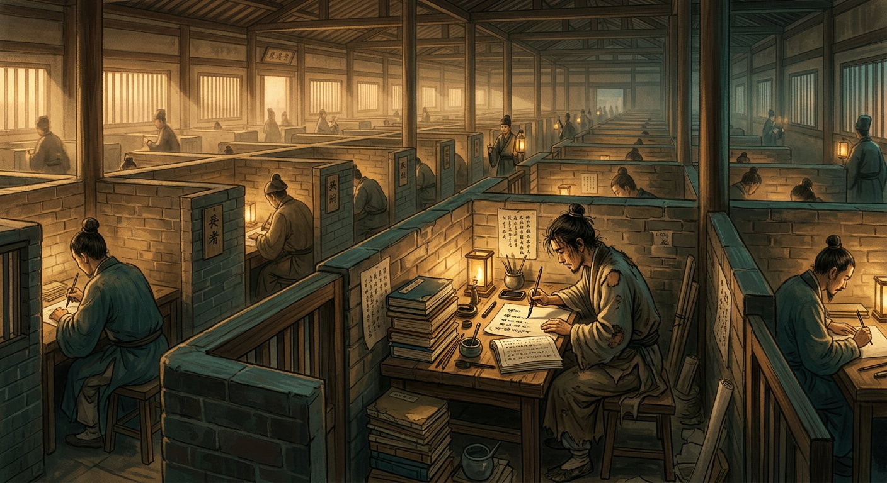
快进到1958年的中国。那时候，钱不是最重要的，票才是。
买米要粮票，买布要布票，买肉要肉票。没有票，有钱也买不到。
还有一个更厉害的，叫户口：它写明了你是'城里人'还是'乡下人'，很大程度上决定了你能去哪、能干什么。
这是一个国家把几乎所有东西都统一分配的年代。你的爷爷辈，就是在这样的世界里长大的。
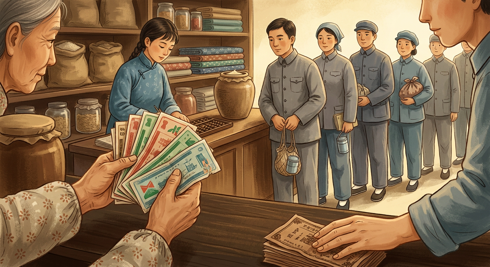
有一段时间，高考停了11年。能不能上大学，看推荐、看出身，不看分数。
1978年，国家决定：恢复高考。不管你是农民还是工人，凭分数说话。
那一年冬天，570万人涌进考场，很多人是从田里、从工厂直接赶来的，手上还有老茧。最后录取了27万。
他们中间，就有后来的俞敏洪、刘强东。一道关了11年的门，突然打开了——只是它只开给手里有准备的人。
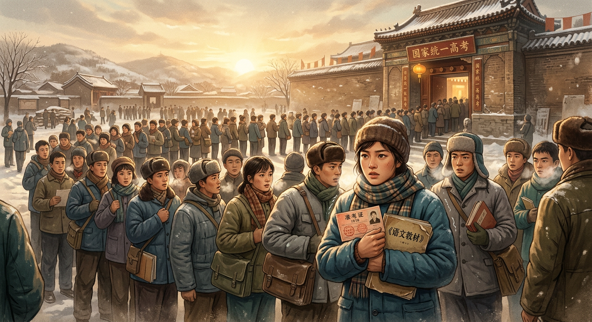
咱们先聊第一种玩法。想象全班只有一个游戏，所有人必须玩同一个。
规则很清楚、入口只有一个、路只有一条。好处是：心特别齐，能办大事。
但有个风险：万一这条轨道本身出了问题，没人敢修——因为所有人都在轨道上，谁动轨道谁就是和大家作对。
这就是'单轨制'：要么一起走对，要么一起走错。
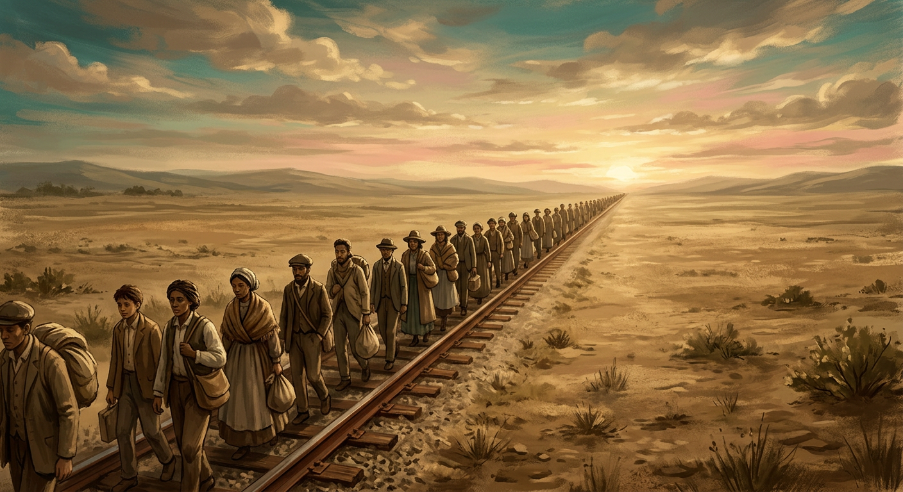
第二种玩法相反：班里有好多游戏，篮球、画画、编程……每个人都能挑。
这叫'多轨制'。它给你一个特别重要的东西——希望。'美国梦'就是说：只要努力，你就能赢。
但仔细看：很多游戏其实是买彩票，中奖的极少；真正定输赢的牌桌，早就坐满了人。
它让你'觉得'你能赢。希望和真的机会，是两回事。
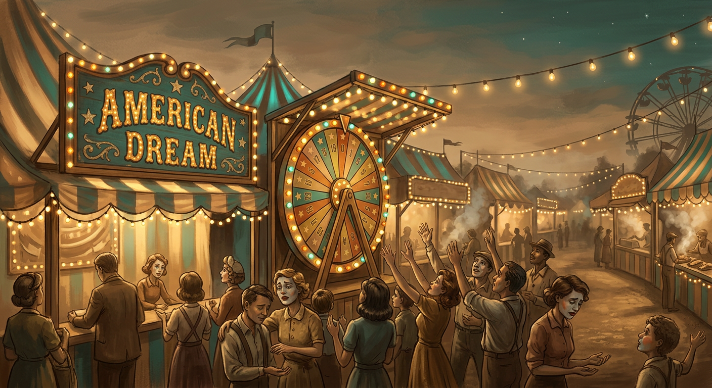
苏联把'只有一个游戏'推到了头：几乎所有工厂、商店、土地，都归国家管。
刚开始很猛，后来出问题了：商店里货架空空，人们排队几个小时买不到面包。
最要命的是，大家知道有问题，却没人有能力、也没人有胆量去修这条唯一的轨道。
1991年，整个系统'哐当'一声垮了。教训是：只有一个游戏时，它一出错，就是所有人的灾难。
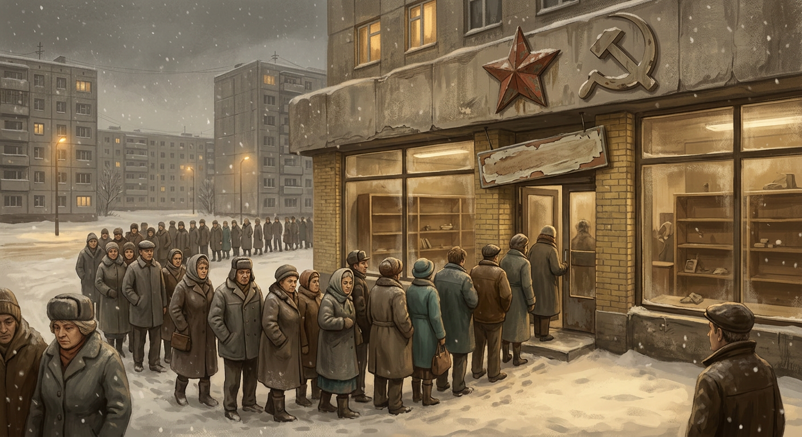
古代的'收租'很直接：你种我的地，收成给我一半。
现代金融把这件事做得看不见了。它不抢你的粮食，它用'利息''债务''杠杆'，从你的账户数字里悄悄拿走。
2008年，这套玩法玩过头，全世界的金融系统差点崩了。可最后倒霉的，不是玩杠杆的银行家，而是丢了房子、丢了工作的普通人。
收割从来没停，只是工具越来越高级，越来越让你看不懂。
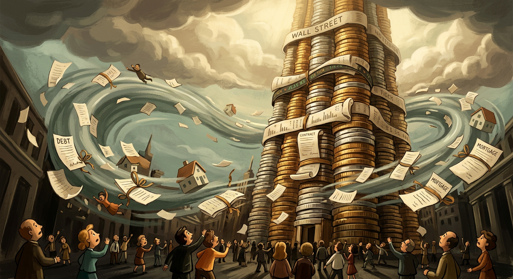
日本有个很美的说法，叫'一亿总中流'——意思是一亿日本人，全是中产，大家都差不多。
曾经，这几乎是真的。但经济泡沫破了以后，社会悄悄分成了两种人：
一种是'正式员工'，工作稳定、福利好；另一种是'派遣员工'，干一样的活，钱少一半，随时被辞退。
同样是上班，却像两个阶级。再平等的社会，也可能长出新的、看不见的墙。
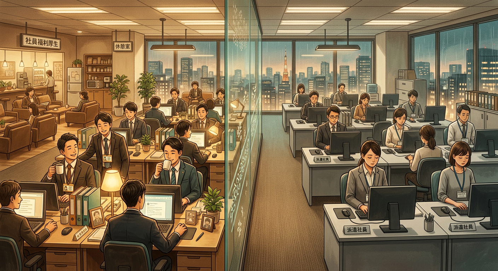
以前的地主，收的是地租。今天出现了一种新'地主'：平台。
你刷视频、点外卖、打游戏、搜答案——背后都是平台。它不收你的地租，它收三样新税：
数据税（你的一切行为它都记下）、注意力税（你的时间被它卖掉）、撮合费（每一笔交易它都抽成）。
最特别的是，这些新地主不分国界——它在中国收，也在美国收。这是人类历史上第一种跨国的收税人。
从苏美尔的麦田，到中国华北的平原，几千年里，人口最多的是同一种人：农民。
他们种出粮食，养活了祭司、士兵、工匠、商人——养活了整个文明。
可是翻遍史书，你找不到几个农民的名字。他们只出现在税册上，是一个数字，不是一个人。
他们生产剩余，却从不参与制定分配的规则。文明靠他们运转，却不为他们书写。
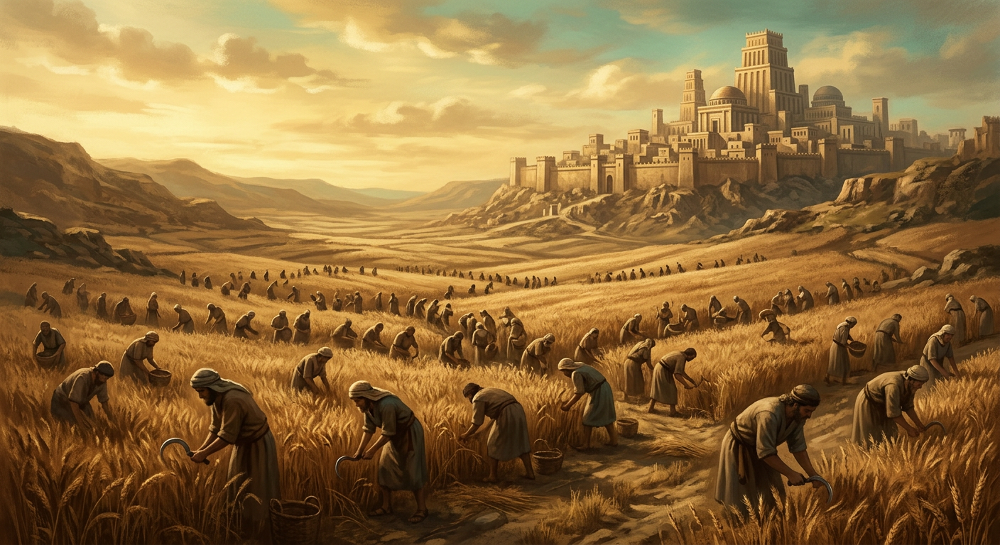
现在看对立面。1789年之前的法国，人分三个等级。
第一等级是教士，第二等级是贵族。他们加起来只占人口的2%，却占着大部分土地，而且几乎不用交税。
剩下的98%——农民、工匠、市民——辛苦干活，却承担了几乎全部的税。
一边越种地越穷，一边不种地反而免税。你说，这样的社会能长久吗？后来，法国大革命爆发了。
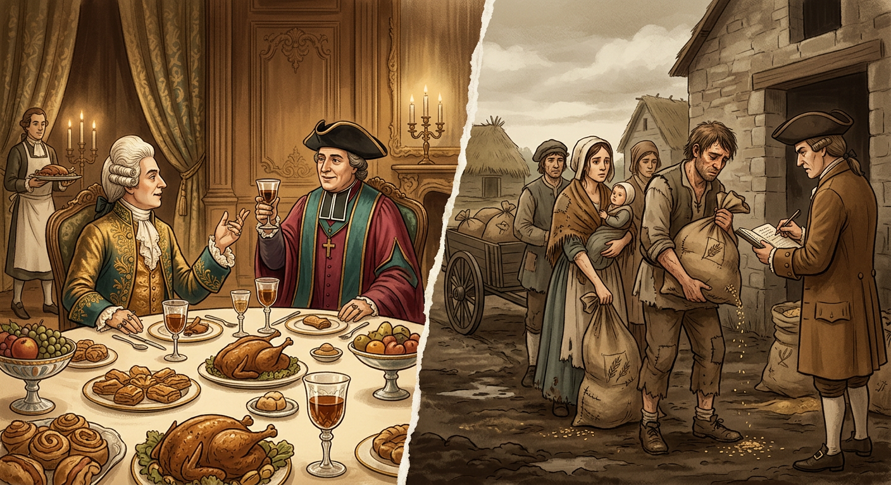
时间快进到今天的中国。农民换了个名字，叫'农民工'。
他们离开土地，进城建起了高楼大厦、修好了地铁、送出了每一份外卖。城市越变越漂亮。
可是，他们的户口还在农村。孩子想在城里上学，难；想在城里安家，更难。很多人干了一辈子，最后还是要回到村里养老。
他们建起了城市，但城市的很多规则，不是为他们定的。
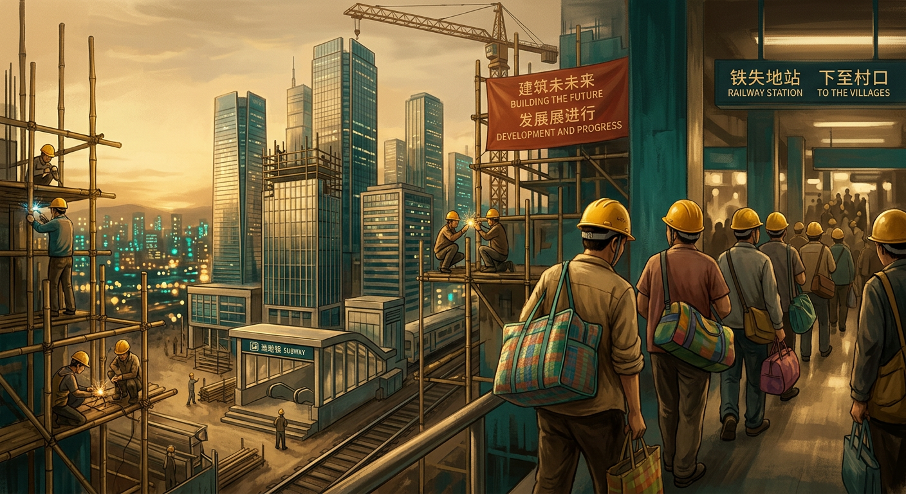
对立的另一边，也换了个样子。今天最厉害的'食利者'，不是贵族，是钱本身。
给你讲个真事。美国有个特别有钱的老人叫巴菲特。有一年他公开说：'我交税的比例，比我的秘书还低。'
是不是很奇怪？其实是规则不一样：秘书靠'干活'挣钱，税很重；巴菲特靠'钱生钱'，税很轻。
一个经济学家叫皮凯蒂，算了几百年的账，发现：钱生钱的速度，一直比人干活挣钱快。所以不干活的人，常常越睡越有钱。
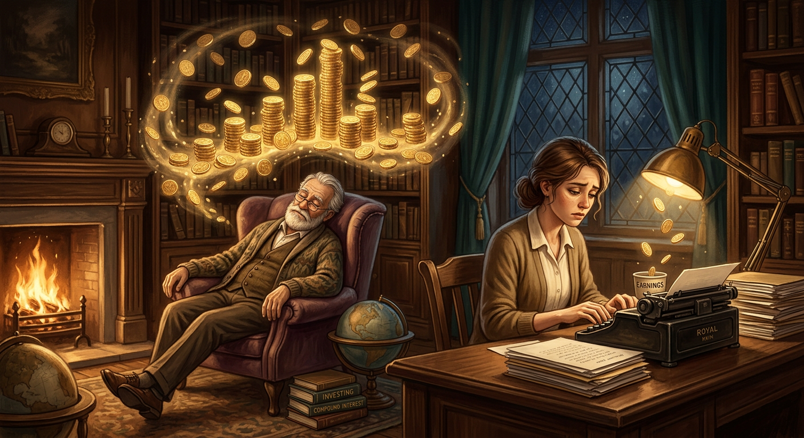
点点，我们讲了一路，从一头野牛，讲到今天。其实只讲了一个问题：谁干活、谁拿钱、谁定规则、谁兜底。
你会发现，没有哪种制度是完美的，它们只是用不同的方式回答这四个问题。
而且记住一件事：每一次重新洗牌，都是因为有了新工具。印刷机让知识不再被锁起来，互联网让开店不要门面。
今天你手里的这块屏幕，就是这个时代的新工具——它和当年的印刷机一样，是一次重新排队的机会。
区别只在于：有人用它打开世界，有人用它打发时间。看清规则→练好本事→抓住窗口。这个选择，在你手里。